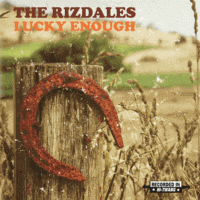

the Rizdales - Lucky Enough (Album, 2018)
01 - Honky Tonk Honeymoon (2:58)
02 - Wine Is A Waste Of Time (2:44)
03 - Lucky Enough (4:01)
04 - Holding It All Together (2:49)
05 - Don't Want To Talk About It (3:13)
06 - Home (4:04)
07 - A Matter Of Wine (3:25)
08 - That's What Losers Do (3:16)
09 - I'm Letting Go (3:32)
10 - Read 'em And Weep (3:51)
11 - One More Beer (3:11)
12 - Halfway To Heaven (3:39)
13 - You Know Whatcha Done (3:14)
14 - New Orleans (4:08)
© The Rizdales :: [Digital]
Notes
Review
351/366 (Project 366)
Canadian Honky Tonk and refined Modern Country Pop with some influences of Folk music and old fashioned Rock'n'Roll. There are both songs with female and male vocals. Sometimes combined together (lead and backing). Great use of fiddles and steel sound, chic of other honky stuff for real tonkin'. Twangin' guitars, sweet mood and light vibe with a pretty might and rockin' tone.
I am especially impressed by the female vocals. Sounds incredibly charming. And combined with the arrangements, it fits so well in this somewhat Modern Country pop. Songs with male vocals are often more dramatic and sound somewhat tragic. Which, of course, also conveys a special sentimentality or feeling of the songs. This variety makes this album a good example of Country sound with its modern, soft, pop, nostalgic look.
Very stylish music with fine casual lyrics. Many songs and texts are very picturesque and contain a true sense of their art, meanings, life. Reminiscent times of good vocal pop, as well as containing the depths of country music and some of the chagrin of Honky Tonk. So, in some way you fall in love with this sound. Also despite the rather strong bias towards authenticity, everything sounds quite modern. Very gallant recordings. Just great modern Country Pop and Folk Rock release. Melodious, somewhat gentle and bright.